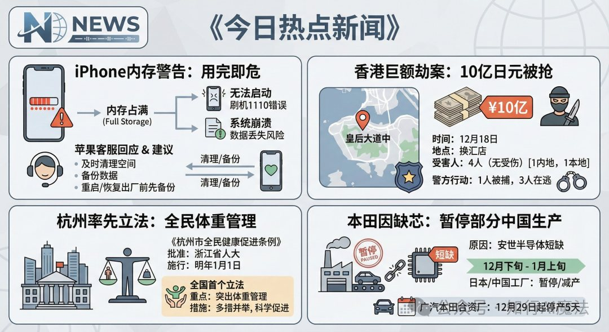
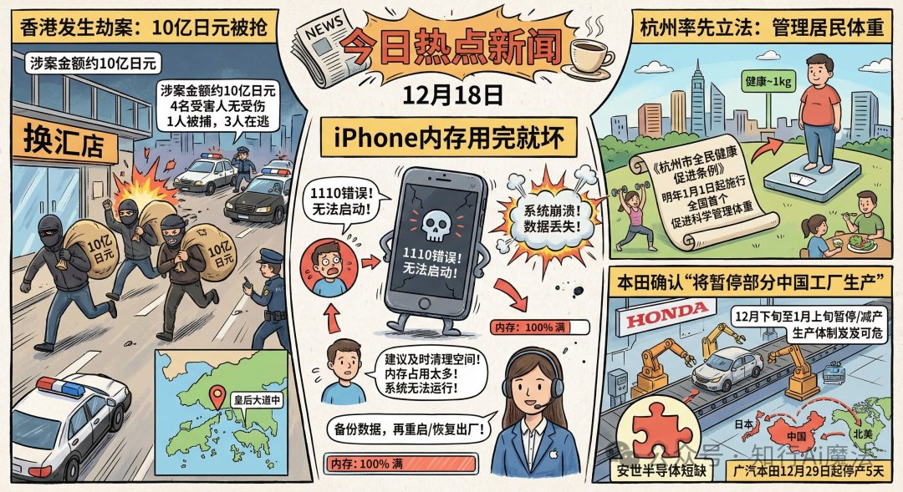
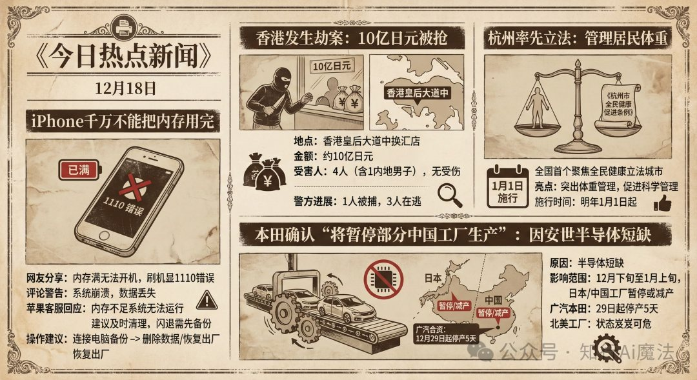
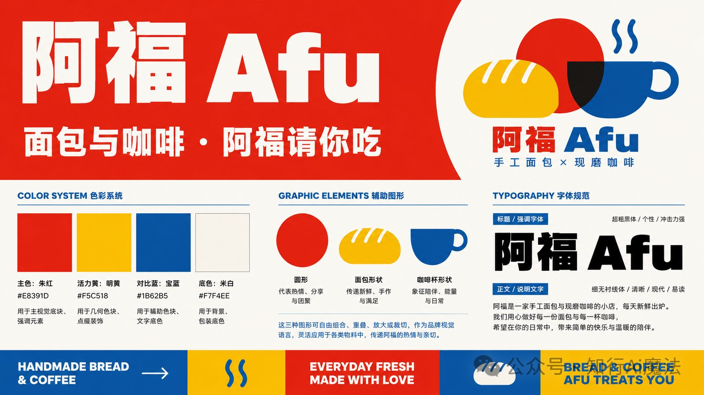
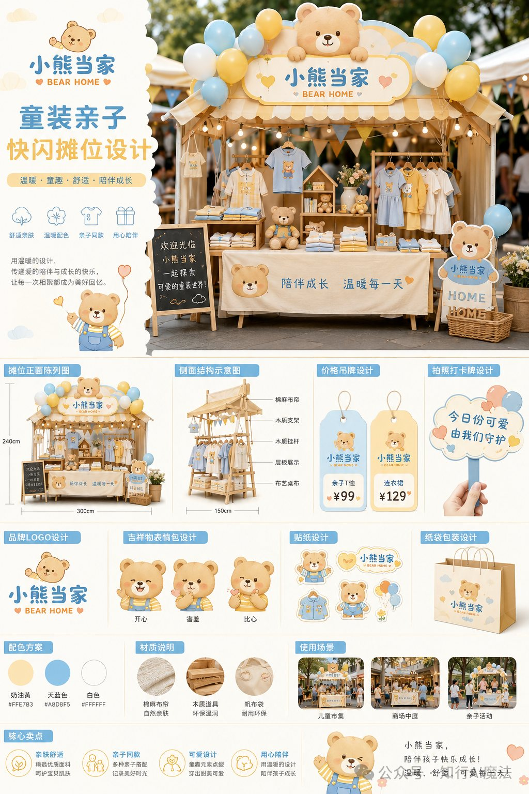
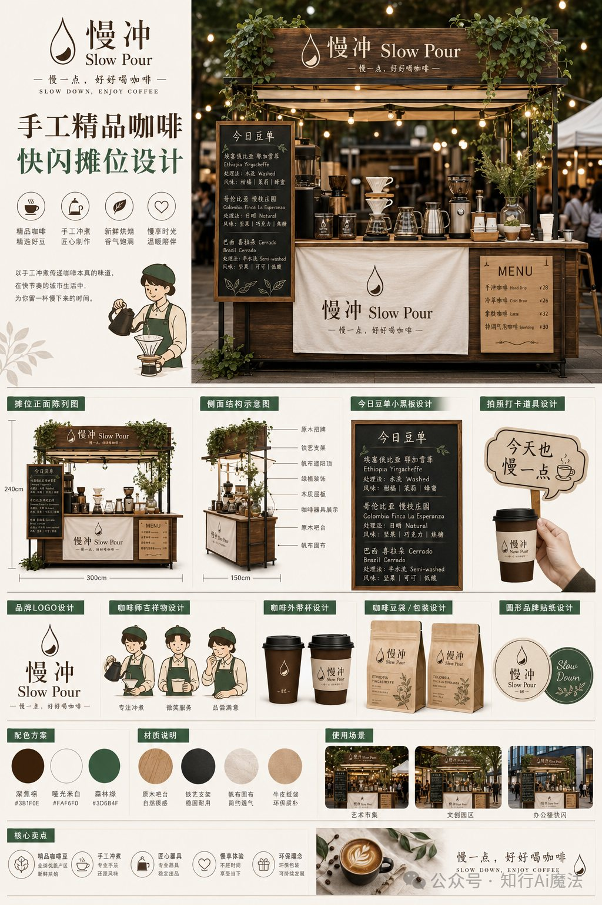

Visual Design
Visual Design
A collection of atmosphere-driven visual experiments across video frames and poster systems, translating information, brands, and scenes into memorable visual languages.
Visual Design Library
This section records visual practices that turn abstract content into strong first-glance recognition: news topics become video-ready frames, while brand concepts become posters, pop-up booths, and supporting visual assets.



Video
Atmosphere Video Frames
Background
Short-form video and information feeds need visuals that communicate a topic in seconds. The challenge is to turn dense news information into frames that are clear, emotional, and ready for fast scrolling environments.
Design Direction
I explored three visual languages for the same hot-news content: a structured news board for clarity, a comic narrative style for stronger drama, and a vintage newspaper style for authority and atmosphere.
Visual Strategy
The frames use modular information blocks, strong headline hierarchy, symbolic icons, map cues, character scenes, and differentiated color moods to make each news point easy to scan while keeping the overall visual rhythm coherent.
Output
The result is a set of video-ready visual frames that can support opening titles, news explainers, topic cards, and social media clips with different emotional tones.
Video
氛围视频视觉帧
创作背景
短视频和信息流内容需要在几秒内完成主题传达。这个板块聚焦如何把复杂热点新闻转化为清晰、 有情绪、有画面记忆点的视频视觉帧。
设计方向
我围绕同一组热点新闻探索了三种视觉语言：信息清晰的新闻看板风格、强化冲突感的漫画叙事风格， 以及更具权威感和氛围感的复古报纸风格。
视觉策略
画面通过模块化信息区、强标题层级、符号图标、地图线索、人物场景和差异化色彩氛围， 让每条新闻都能被快速识别，同时保持整体节奏统一。
作品产出
最终形成一组适合视频开场、新闻解释、话题卡片和社交媒体短片使用的视觉帧， 可以根据内容语气切换不同情绪表达。



Poster
Brand Poster Systems
Background
Poster design needs to hold both brand recognition and scene imagination. These works explore how visual identity can extend into food, coffee, children's apparel, and pop-up retail experiences.
Design Direction
Afu uses a high-energy red, yellow, and blue system to create warmth and appetite. Bear Home builds a soft parent-child atmosphere through pastel colors and cute mascot assets. Slow Pour uses wood texture, deep green, and hand-brew coffee cues to create a slower, artisanal mood.
Visual Strategy
Each poster develops a full visual kit: logo direction, color palette, graphic elements, typography, booth structure, signage, packaging, price cards, stickers, and usage scenarios.
Output
The outputs work as both presentation posters and brand extension guides, showing how a visual concept can scale from a single key visual into retail touchpoints.
Poster
品牌海报系统
创作背景
海报设计需要同时承担品牌识别和场景想象。这组作品探索如何把视觉识别延展到面包咖啡、 童装亲子、手冲咖啡和快闪零售等场景。
设计方向
阿福以高能量的红、黄、蓝建立热情与食欲感；小熊当家通过柔和配色和可爱吉祥物营造亲子陪伴氛围； 慢冲则用木质、深绿和手冲咖啡器具语言塑造慢一点、手作感更强的品牌气质。
视觉策略
每张海报都不仅是单张画面，而是一套完整视觉资产：包含 LOGO 方向、配色方案、辅助图形、 字体规范、摊位结构、导视牌、包装、价格牌、贴纸和使用场景。
作品产出
最终作品既可以作为展示海报，也可以作为品牌延展指南，呈现一个视觉概念如何从主视觉扩展到零售触点。

Cultural Product Design
Hunan Party History Museum Cultural Products
Background
This school-enterprise collaboration responded to the Hunan Party History Museum's need for cultural products that could carry local Hunan characteristics while remaining accessible for visitors and daily use.
Goal
The goal was to translate historical memory and regional identity into a practical cultural product system, making the museum experience easier to take away, remember, and share.
Actions
We combined historical background research with market research on best-selling museum merchandise categories, then developed product directions across canvas bags, gift packaging, stationery, bookmarks, folders, and supporting visual assets.
Effect
The final output connected red cultural memory with contemporary product formats, forming a more complete cultural and creative product proposal that balances commemorative value, local recognition, and everyday usability.
文创产品设计
湖南省党史馆文创项目
背景
该项目为校企合作项目，源于湖南省党史馆希望将湖南特色元素融入馆内文创产品及周边设计， 让红色文化记忆以更贴近日常生活的方式被看见、被带走、被传播。
目标
在尊重党史馆历史语境的基础上，提炼具有湖南地域识别度的视觉元素， 形成兼具纪念意义、实用价值和年轻化表达的文创产品系统。
动作
我们结合实际历史背景与市场调研，分析当前文博文创市场中热销的产品门类， 并围绕帆布包、礼盒包装、文具套装、书签、文件夹等高使用频次品类进行设计延展。
效果
最终产出以红色文化为核心、以湖南特色为视觉线索的文创周边方案， 既保留党史馆的纪念属性，也提升了产品的实用性、礼赠感和传播识别度。
Design Reflection
Across both video and poster work, my focus is to make visual atmosphere practical: the image should be expressive at first glance, but also structured enough to become a repeatable content or brand system.